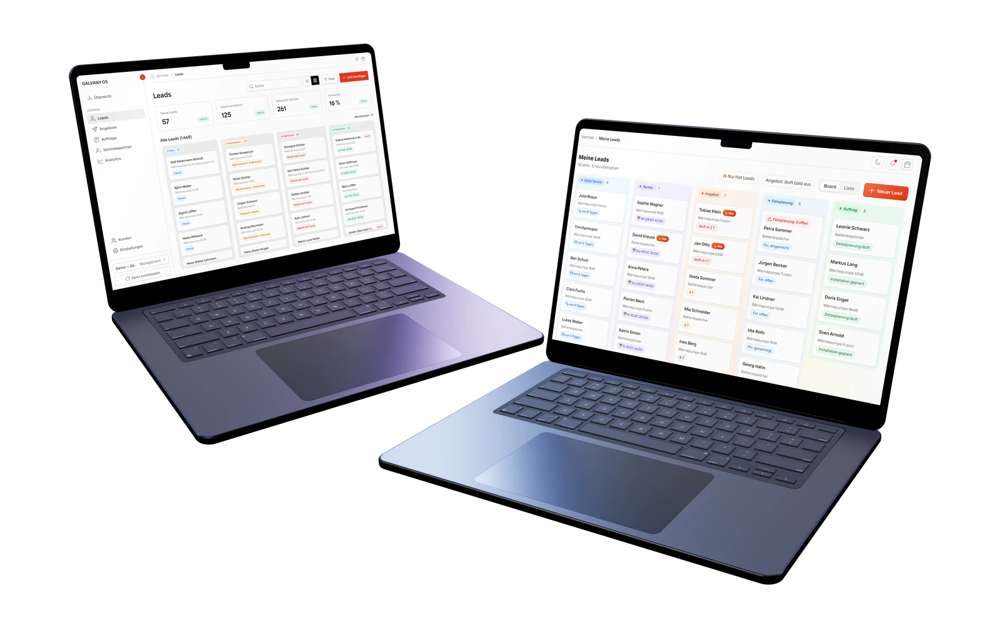
Nº 02 · Case study
GALVANY OS & Sales Portal
One flow from lead to installed heat pump, across two products.
01 · Brief
GALVANY sells heat pumps through sales partners. GALVANY OS is meant to replace Airtable for its own teams. The partners work in the Sales Portal, and every customer passes from one to the other and back. I design both.
02 · Outcome
GALVANY’s production design system is our developer’s version of mine. It took its brand colours from my OS prototype, and I made the ten design calls that were still open. The OS prototype itself is meant to become the spec the backend is built from.
03 · The flow
Two products, one customer.
The two need to work together and share a lot of information. They also speak the same language: the portal uses the OS’s words for every offer and order state.
Behind the OS sits the project record GALVANY’s own teams share in Airtable today. Mapping it field by field showed how much of it repeats. The date goods leave the warehouse, for one, turns up in four places.
-
Lead
A lead comes in through the OS and gets verified.
-
Seller
It’s shared with a seller, who picks up the customer in the Sales Portal.
-
Offer
The seller creates an offer, and it’s shared back to the OS.
-
Contract
The customer signs, and the signed contract is checked in the OS.
One field, one place.
04 · What I did
What I did.
I lead product design at GALVANY, and its design system started with me. Long before our developer built his version, I built the first one in code, from an existing UI kit. I skinned it to our brand and ran the OS and the Sales Portal prototypes on it. I own both prototypes: what each team and each seller sees, and how a project moves between teams. The backend will be built against them. For the OS, I also own the interviews.
I design in code with Claude Code: clickable prototypes on fictional, seeded data. The OS prototype runs on over two thousand mock projects. Claude asks, I decide. Even a sort order waits for my answer, and it goes into the code as a dated decision. Sometimes I let Claude run ahead, as in the overnight build of the first twelve OS work views. It logs every guess for my review.
05 · The system
The OS borrowed the seller’s board.
In the OS, sales runs through queues built on the same grammar: lead, offer, order and project. Its lead board took its look from the seller’s board in the portal. Each column gets a coloured pill with its count, and the white cards carry tags in the column’s colour. So a lead looks familiar to the team that verified it and to the seller who picks it up.
Behind the queues sits the status model. It runs from order review through detailed planning, procurement and scheduling to installation, acceptance and close. Every status belongs to a station, so the system always knows whose move it is.
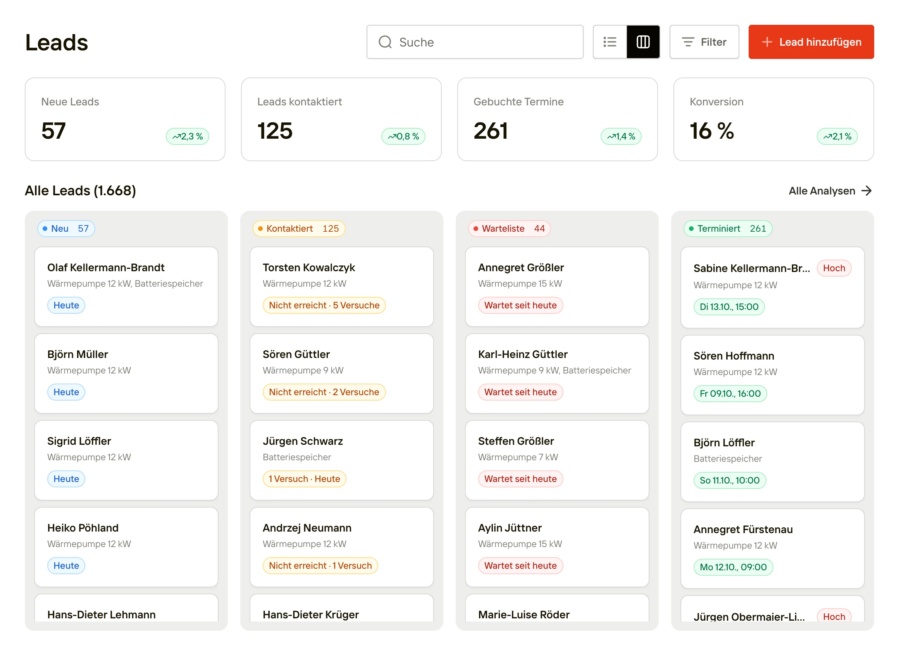
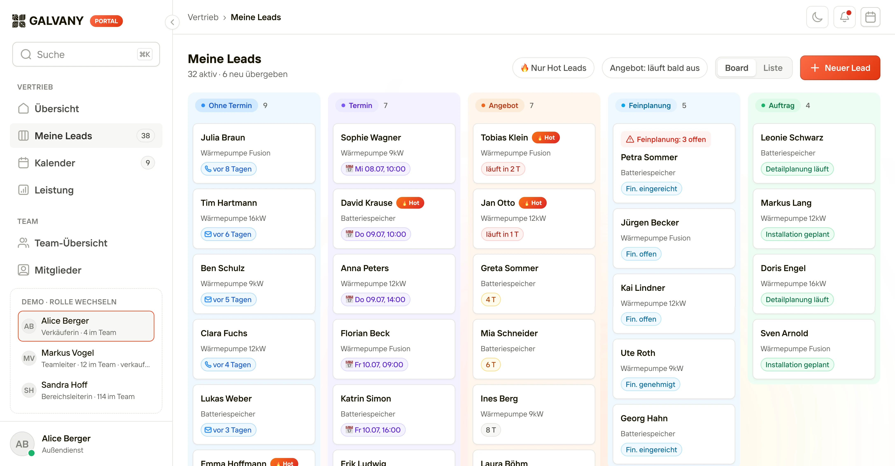
Every person, customer and record on these screens is fictional: the prototypes run on seeded mock data. Only the product names are GALVANY’s own.
06 · Key decisions
Key decisions.
The lead opens beside the board
In the portal, a lead opens in a drawer on the right, so sellers keep their place on the board. Calling, the offer and the next steps sit at the top. On a phone, the drawer goes full screen.
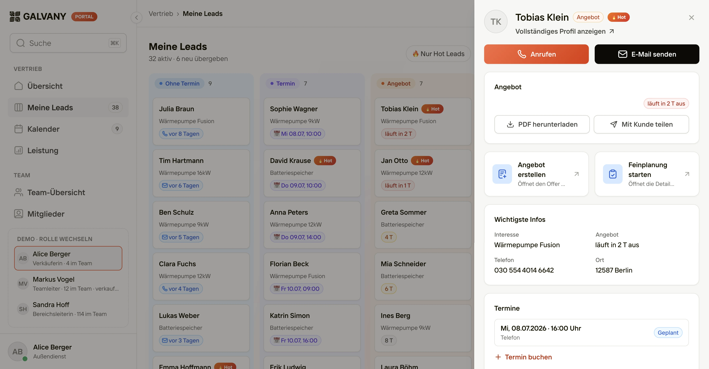
Every exception starts with a lead
The portal’s team view lists what needs attention as open exceptions. Each one comes from a lead’s state, like a lead still waiting three days in a seller’s inbox. Sellers aren’t measured on speed or activity. One click opens the seller’s page, where a call can unblock it.
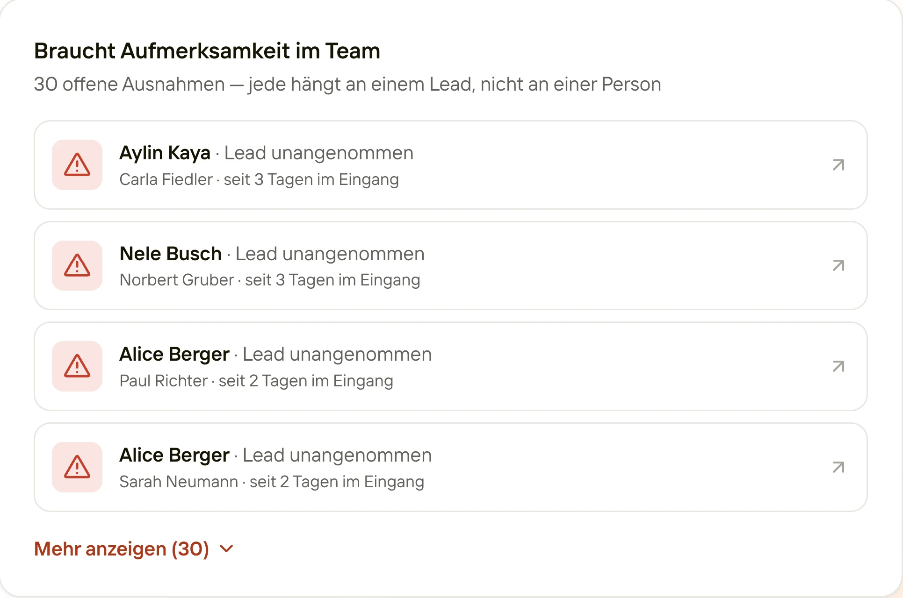
A rejection names the page
Back in the OS, order review sits beside the signed offer: a seven-point checklist, each point with its page. It ends in a release, or a rejection with a reason. A rejection names the failed check and the page, like 'Cancellation policy not signed · p. 12'. The seller sees it in the portal, so whoever fixes it doesn’t have to guess.
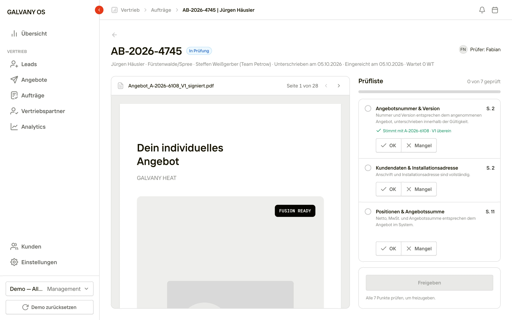
Gates before anyone installs
Nothing gets installed until its four gates are clear: subsidy, detailed planning, financing and the electrics. Every pipeline card shows them as check circles (the electrics joined later), so what’s blocking is visible at a glance.
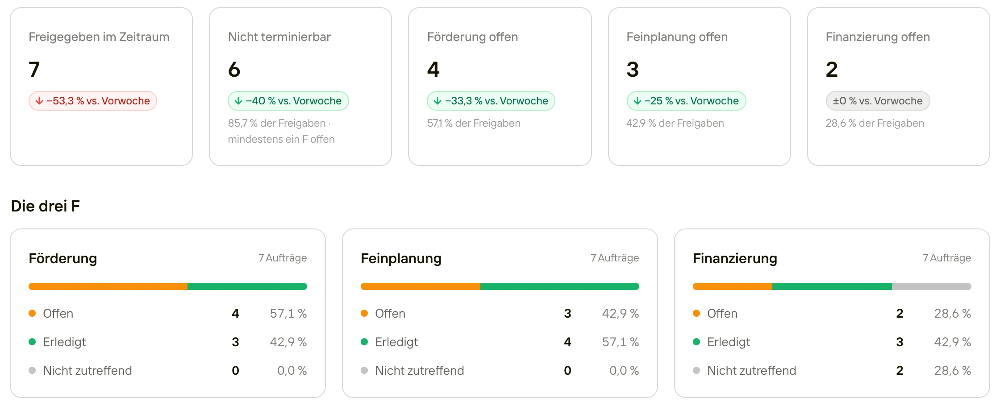
A view starts with a sentence
In the OS, people describe the view they need in their own words: region, amount, period, team. It becomes a list or a dashboard on the live data, saved with their other views. To change it, they tell the AI what should change, or edit each part of the view directly.
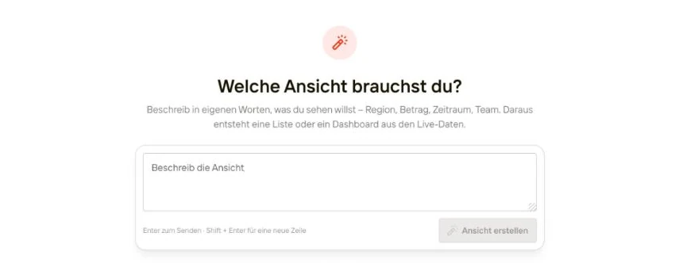
07 · Research
Every workaround counts as a finding.
I test the OS prototype with the people who will live in it. In one session, two order managers spent thirty minutes on how they work today and thirty on the prototype. In a paired interview the biggest risk is false agreement. So on the main questions, both wrote their answers down before saying them, and only one of them drove.
The interviews changed the product. A ‘blocked’ badge became a named reason. The electrics got their own traffic light, and add-on orders a record of their own. Next came installer matching, ‘best three’: three ranked installer teams with plain-language reasons. Assigning a team doesn’t fix the date: the installer accepts and picks the start day.
08 · Final designs
Final designs.
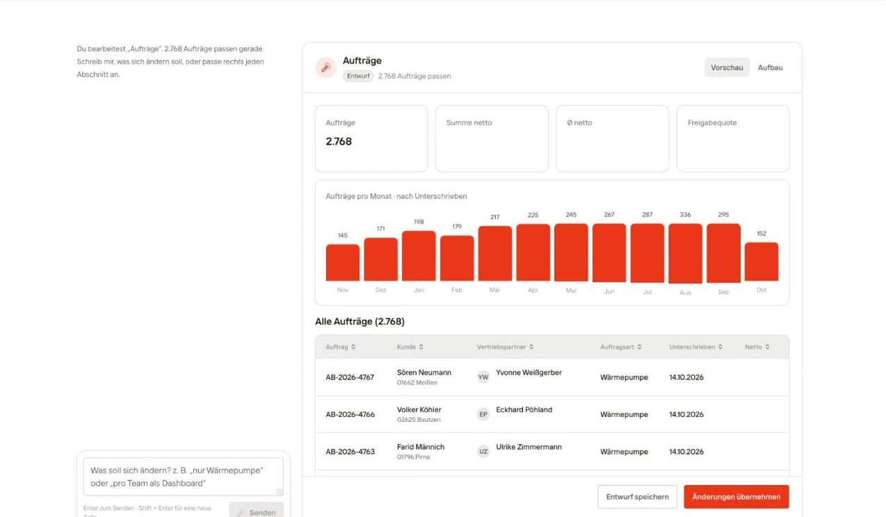
Refine a view with AI
Tell the OS what should change and see it in the preview, or edit the view’s filters and grouping directly. Changes stay a draft until you apply them.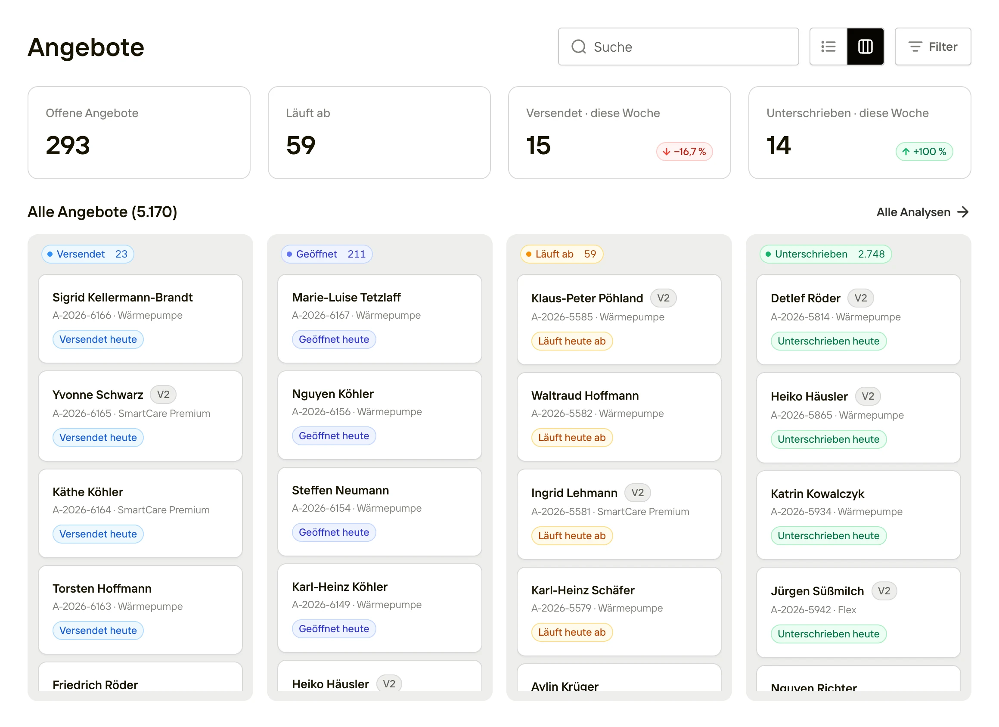
Offers in the OS
Every offer a seller sends shows up here, from sent to signed.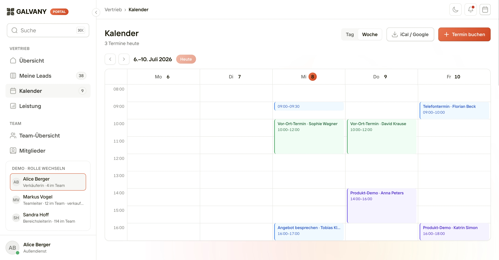
The seller’s week
On-site visits, product demos and calls in one week view, with an export to iCal and Google.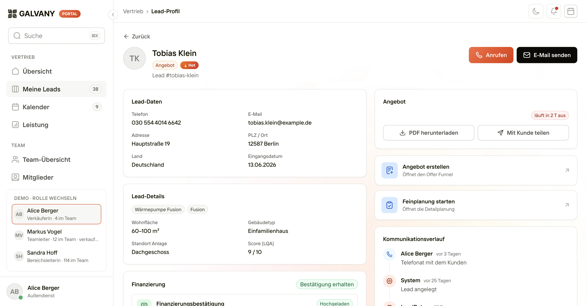